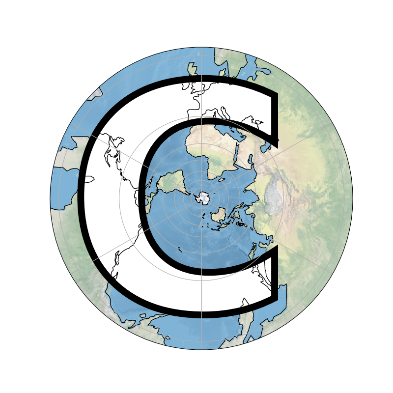

Note
Click here to download the full example code
Cartopy Favicon¶
The actual code to generate cartopy’s favicon.
import cartopy.crs as ccrs
import matplotlib.pyplot as plt
import matplotlib.textpath
import matplotlib.patches
from matplotlib.font_manager import FontProperties
import numpy as np
def main():
fig = plt.figure(figsize=[8, 8])
ax = fig.add_subplot(1, 1, 1, projection=ccrs.SouthPolarStereo())
ax.coastlines()
ax.gridlines()
ax.stock_img()
# Generate a matplotlib path representing the character "C".
fp = FontProperties(family='Bitstream Vera Sans', weight='bold')
logo_path = matplotlib.textpath.TextPath((-4.5e7, -3.7e7),
'C', size=1, prop=fp)
# Scale the letter up to an appropriate X and Y scale.
logo_path._vertices *= np.array([103250000, 103250000])
# Add the path as a patch, drawing black outlines around the text.
patch = matplotlib.patches.PathPatch(logo_path, facecolor='white',
edgecolor='black', linewidth=10,
transform=ccrs.SouthPolarStereo())
ax.add_patch(patch)
plt.show()
if __name__ == '__main__':
main()
Total running time of the script: ( 0 minutes 1.213 seconds)